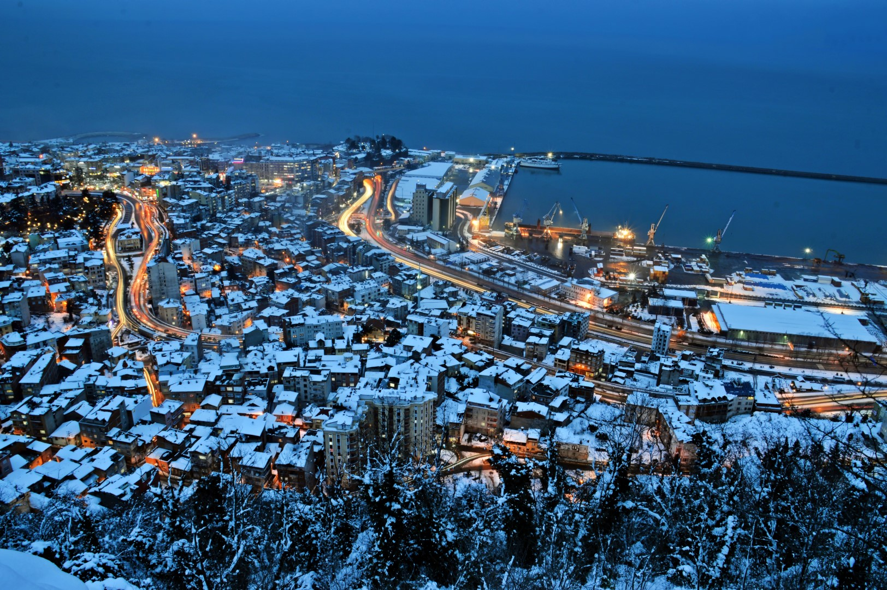
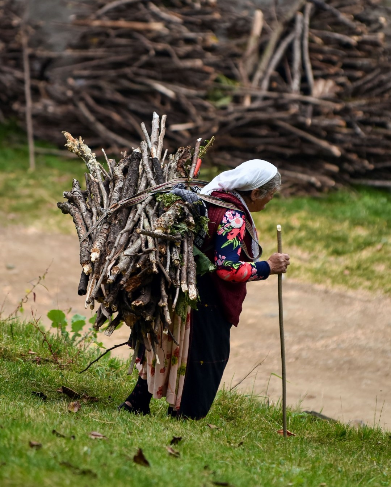
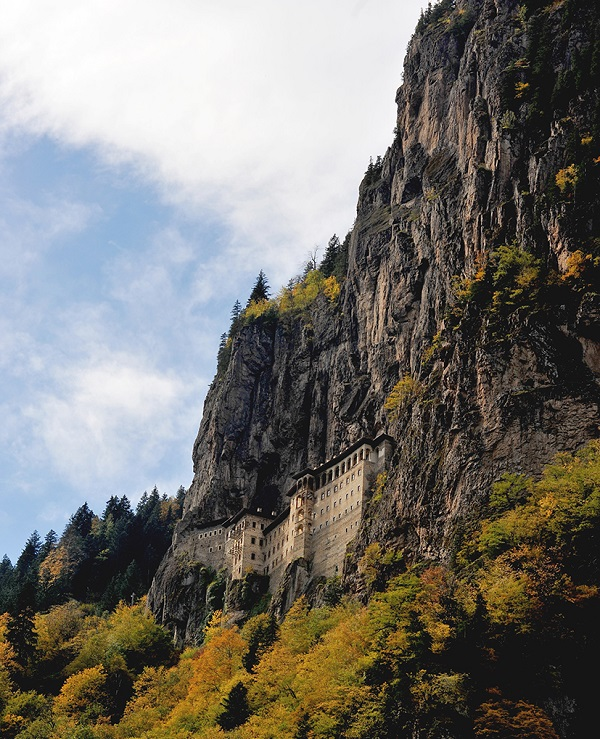

TRABZON
Yaşadığım şehir olmamasına rağmen Türkiye'de en çok ziyaret etmek istediğim şehirlerden... Bundan dolayı size Trabzon hakkında bilgi vereceğim. Haydi hep birlikte bir sanal gezi yapalım.


Nerede Bulunuyor?
Doğu Karadeniz Bölgesinde Karadeniz Sahili ve Zigana Dağları arasında yer alan ve Giresun, Gümüşhane, Rize ve Bayburt illeri ile komşu olan Trabzon Şehri; Artvin, Rize gibi doğa harikası bir kentimizdir.
Nüfusu
Yüzölçümü bakımından küçük olmasına karşın, Trabzon'un nüfusu 740.000 civarında olup Karadeniz Bölgesi’nin en gelişmiş 2. ili durumundadır.
Geçim Kaynağı
Yeşilin ve Mavinin en nadide görüntülerinin bulunduğu kent, adını bu yönüyle dünyaya duyurmuş çok önemli bir tatil bölgesi olma yolunda hızla ilerlemektedir. Oksijen deposu yaylalarıyla, insanın ruhunu okşayarak akan dereleri ve muhteşem mutfağıyla
sunduğu onlarca yöresel lezzetleriyle de Trabzon özgün bir şehirdir. Trabzon ilinin ekonomisi tarıma dayanır. Faal nüfusun % 75’i tarım, hayvancılık, balıkçılık, avcılık ve ormancılıkla geçinir.
Tarım:
Trabzon ilinin iklim şartları sanayi bitkilerinin üretimine çok elverişlidir. Ekime elverişli alanları az olmakla beraber, ormanları, çay ve fındık bahçeleri, otlakları geniş yer kaplar. Başlıca tarım ürünleri çay, patates,
mısır, fındık, tütün, buğday ve fasulye (kuru) dir. Sebzecilik ve meyvecilik de önemli yer tutar. 40 milyon civarında fındık ağacı vardır. Fındıktan sonra armut, kiraz, ve turunçgiller oldukça fazla yetişir. Trabzon ilinde ekilmeye
müsait bir karış boş toprağa rastlamak mümkün değildir.
Hayvancılık:
Trabzon’un iklim şartları hayvancılığa çok müsaittir. Bol yağış sebebiyle otlaklar (mer’a ve çayırlar) her zaman gür otlarla kaplıdır. Sığır, koyun, kıl keçisi ve
kümes hayvanı beslenir. Arıcılık gelişmektedir.
Ormancılık:
Trabzon ili orman varlığı bakımından oldukça zengin sayılır. 200.000 hektar ormanlık ve 10.000 hektar fundalık saha vardır. İl dahilinde 2300 m yüksekliğe kadar ormanlar bulunur.
Yükseklerde iğne yapraklı, alçaklarda geniş yapraklı ağaçlara rastlanır. Ormanlarda en çok çam, ladin, köknar, fundalık, kızılcık, taflan, muşmula, avcı üzümü, defne, geyikdikeni, çobanpüskülü ve 500 m yüksekliğe kadar kestane, meşe
ve kızılağaçlarla çok çeşitli ağaçlar bulunur. 38 köy orman içinde ve 87 köy orman kenarındadır. Ormanlardan tomruk, maden direği, sanayi odunu, kağıtlık odun ve yakacak odun elde edilir.
Gezilecek Yerleri
Uzungöl ve Karester Yaylası
Lapazan Yaylası
Akarsu Köyü Mağarası
Kızlar (Panagia Theoskephastos) Manastırı
Sümela Manastırı
Trabzon ili, Maçka ilçesi, Altındere köyü sınırları içerisinde yer alan Panagia (Meryem Ana) deresinin batı yamaçlarında Mela tepesi üzerinde konumlanmış bir Rum manastır ve kilise kompleksi olup, tam adı Panagia Sumela veya Theotokos Sumeladır. Denizden yüksekliği 1250 metredir.
Manastıra ulaşım, Trabzon merkezden otomobille 45 dakika olup, manastıra orman içinden patika bir yolla ulaşılır. Kuruluşu, M.S 4’üncü yüzyıla tekabül etmektedir. Daha sonra Komnenoslar Dönemi’nde onarımı yapılmış ve genişletilmiştir. Bugünkü halini ise III. Alexios zamanında almıştır.
Manastır, kilisenin bulunduğu bir bir mağara, kutsal bir çeşme, talebe odaları, servis bölümleri ve bir konuk odasından oluşmaktadır. 19’uncu yüzyılda ek bölümlerin inşa edilmesiyle genişletilmiştir.
Manastırın ana ünitesini meydana getiren kaya kilisesinin dış duvarları fresklerle donatılmış olup, işlenen başlıca konular; İncil’den alınmış sahneler, Hz. İse ve Meryem Ana’nın hayatı ile ilgili tasvirlerdir. Trabzon’daki dinsel yapıtlar arasında en çok ziyaret edilen mekandır. Daha fazla bilgi için...
